Web Scraping with Python
⚡️ This lesson has been adapted from Melanie Walsh’s chapter on Web Scraping in Introduction to Cultural Analytics & Python textbook https://melaniewalsh.github.io/Intro-Cultural-Analytics/04-Data-Collection/02-Web-Scraping-Part1.html. Many thanks to Melanie for sharing their materials!
Now that we have learned how to work with Python modules and read and write files, we can start to think about how to get data from the web. This is a very important skill for a digital humanist, as many of the sources we might want to work with are online.
What Is Web Scraping and Why Is It Useful?
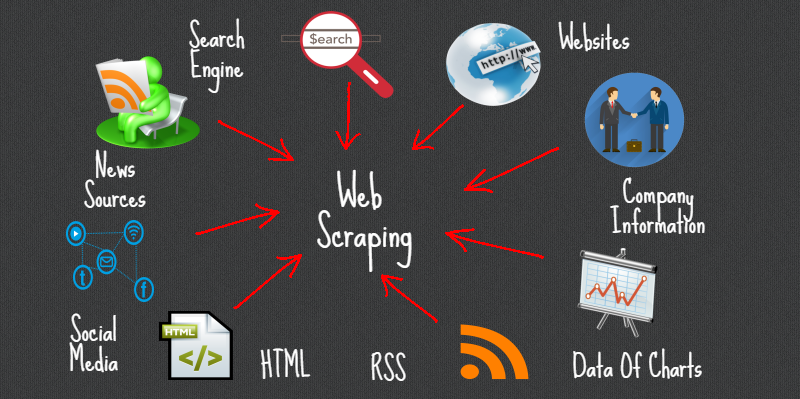
So far when it comes to working with the web, you have been creating your own HTML pages and hosting them via GitHub. But we can also use Python to interact with the web in a different way: by scraping data from web pages. The data we extract is exactly the same as what you have been writing, so elements like headers, paragraphs, and links, etc.
Web scraping can be incredibly useful considering how much data is available on the web and how little of it is often put into tabular format. For example, you might want to scrape a web archive to get data for a research project, or you might want to scrape a social media site to get access to data that isn’t available through their API.
Web scraping is also what we use to preserve the web. Remember the Wayback Machine? That’s a web archive that uses web scraping to save web pages. The way it works is that it uses a web crawler to find links to web pages and then it uses web scraping to save the content of those pages.
This method has also been used by scholars to do community-driven data preservation. For example, when Russia invaded Ukraine, a group of scholars and librarians founded the Saving Ukrainian Cultural Heritage Online (SUCHO) group and used web scraping to preserve the content of Ukrainian websites https://www.sucho.org/. This was important because if servers are bombed, the content of those websites would be lost forever.
Is Web Scraping Legal or Ethical?
Technically, most publicly available internet data is considered legal to collect, even if it’s not explicitly licensed. In 2019, “the Ninth Circuit Court of Appeals ruled that automated scraping of publicly accessible data likely does not violate the Computer Fraud and Abuse Act (CFAA).”1 However, there are some important caveats to this. For example, this ruling only applies to US based websites and the laws in other countries might be different. One of the more recent and important European developments was the passing of the General Data Protection Regulation (GDPR) in 2018, which has implications for web scraping. In particular, the GDPR bans the scraping of emails and personal names from websites. More recently, a consortium of regulators from multiple countries released a joint statement warning social media companies that they must protect user data from scraping.2
In terms of ethics, web scraping can be a bit of a grey area. It’s generally considered ethical to scrape publicly available data, but it’s not ethical to scrape data from a website that has a terms of service that prohibits scraping. It can be difficult to find those terms of service, but one more obvious example of a website banning scraping is if it prohibits scraping in its robots.txt file. A robots.txt file is a file that websites use to tell web crawlers which pages they are allowed to scrape.
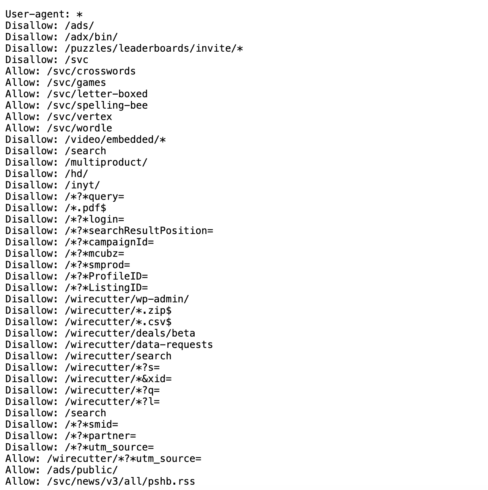
For example,the above image is of the robots.txt file for the New York Times website is https://www.nytimes.com/robots.txt. We can see that it lists a number of pages that are not allowed to be scraped (those are the ones with the Disallow directive). You might also come across robots.txt files that have a Crawl-delay directive, which tells web crawlers how long to wait between requests. The reason this is important is that if you try to web scrape a website that has a robots.txt file that prohibits scraping, you could be banned from the website. This is because the website might think you are a web crawler and not a human, and it might block your IP address.
What to collect and how to collect it is a big part of the ethics of web scraping. Melanie Walsh has a great overview of some of these tradeoffs:
Just because something is legal or gets approved by an IRB does not mean it is ethical. Collecting, sharing, and publishing internet data created by or about individuals can lead to unwanted public scrutiny, harm, and other negative consequences for those individuals. For these reasons, some researchers attempt to anonymize internet data before sharing it or before publishing an article that cites a post specifically. Yet anonymizing internet data also does not give credit to internet users as creators and authors.
There is no single, simple answer to the many difficult questions raised by internet data collection. It is important to develop an ethical framework that responds to the specifics of your particular research project or use case (e.g., the platform, the people involved, the context, the potential consequences, etc.).
In my own research, I have started seeking explicit permission from internet users when I want to quote them in a published article. In this book, I only share internet data that meets a certain threshold of publicness, such as tweets from verified Twitter accounts or Reddit posts with a certain number of upvotes. This is an approach that I have developed based on some of the models and readings included below.
IRB refers to the Institutional Review Board, which is a committee that reviews and approves research involving human subjects at universities, and most of the time, web scraping or accessing digital data is considered not to be human subjects research. However, even if we don’t need IRB approval, it’s still important to think about the ethics of web scraping and to consider the potential consequences of our actions. I personally think Walsh’s approach is a good one: to think about the specifics of your research project and to develop both a legal and an ethical framework that responds to those specifics. And also to think about the consent of the people whose data you are collecting. There’s no one size fits all answer, but we should always think about not only if we can collect data, but also if we should and how we should.
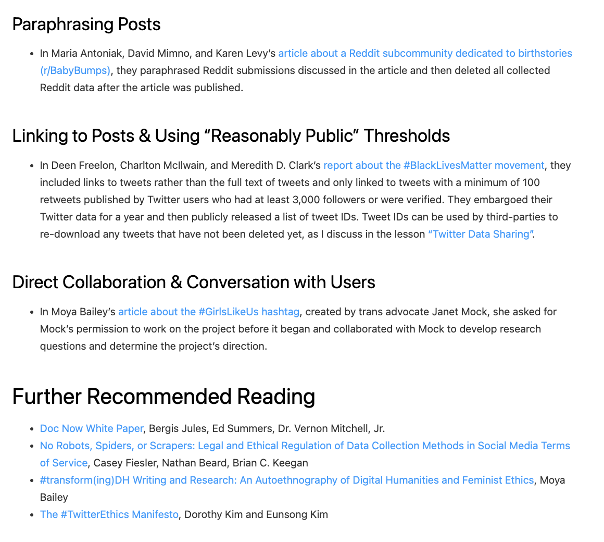
As you can see above, Walsh also has a great overview of different strategies and resources for this type of work, so highly recommend visiting the original chapter to explore these further in depth https://melaniewalsh.github.io/Intro-Cultural-Analytics/04-Data-Collection/01-User-Ethics-Legal-Concerns.html.
Web Scraping with Python
Now that we have a sense of web scraping generally, it’s time to try it out in Python. We will be using two Python libraries to do this: requests and beautifulsoup4. The requests library is a library that allows us to send HTTP requests to web pages. The beautifulsoup4 library is a library that allows us to parse HTML and XML documents. We will be using requests to get the web page and beautifulsoup4 to parse the web page.
Installing Required Packages
The first step is to install our required packages into our virtual environment. If you have yet to set up a virtual environment, you can follow the instructions in the previous lesson.
If you have already created your virtual environment, then you can either activate it using Visual Studio Code or by using the terminal. If you are using the terminal, you can activate your virtual environment by running the following command:
source venv/bin/activate
pip install requests beautifulsoup4Notice here we are installing two packages: requests and beautifulsoup4 in a single line. You can install as many packages as you want in a single pip install command, just separate them with a space.
We previously discussed Python libraries when we talked about classes and virtual environments, but let’s dig in a bit deeper.
Library
- There’s a lot of different definitions for this term, but most generally you can think of this as a collection of software that’s directly used by other software. Most often, this will be a generalizable piece of logic that is useful to bundle separately so that other, unrelated pieces of software can use it. Because it’s an informal term in Python and not a specific, technical one, it’s more useful to think about libraries in terms of how code is organized. Used in this way, the concept of “software libraries” spans many different programing languages and development contexts: we have Python libraries, C++ libraries, Javascript libraries, operating system libraries, etc.
- Let’s consider libraries that we’ve used. The Python Standard Library is the most obvious example which encompasses many different purposes and packages (more on that later), but is unified in that it is included in all Python installations so that Python code that’s written using the Standard Library will run on any compatible Python environment of the expected version. Parts of the Standard Library that we’ve used before include packages like pathlib.
- There are also third-party libraries that people build in Python, which can be found on The Python Package Index (PyPI) https://pypi.org/. These are usually less expansive than the Standard Library, but can be useful because they are written for specialized tasks. This week, we’ll take a look at Beautiful Soup, which is analogous in scope to packages like pathlib. In fact, third party libraries are often organized into a single package. A library like Beautiful Soup can best be thought of in terms of purpose: you want to accomplish the a particular, common task like scraping a website and Beautiful Soup helps accomplish it.
Package
- A package is a formal term in the Python context. It’s a specific organization of code which all lives in a single directory. Libraries sometimes (often) consist of a single package (e.g. PathLib or BS4), so the term is sometimes (often) used interchangeably. Packages are the basic unit by which we install and use libraries. So when we type
pip install beautifulsoup4into the terminal, we’re installing thebeautifulsoup4package.
This is very detailed, but just remember that while these terms are often used interchangeably, a package is a more specific concept referring to the structure and distribution of code, whereas a library is a broader concept referring to reusable code functionality.
Finally, you’ll see that I often use pip or pip3 when installing packages. This is because pip is the package installer for Python and pip3 is the package installer for Python 3. If you’re using Python 3, you can use either pip or pip3, but if you’re using Python 2, you should use pip2. So generally, you’ll want to use pip to install packages but to double check you’re installing packages for the right version of Python, you can check the version of Python you’re using by running python --version and then use the corresponding pip command.
Now we can starting using these packages in our Python code. First, we need to create a new folder in our is310-coding-assignments called web-scraping and then create a new file called first_web_scraping.py. Then we can add the following code to our file:
import beautifulsoup4You’ll likely see the following error if you try to run this code:
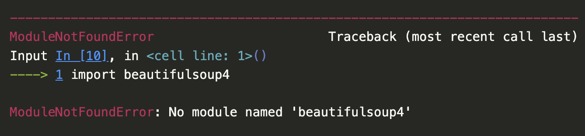
That is because beautifulsoup4 is not a package that we can import directly. Instead, we need to import the BeautifulSoup class from the bs4 package. This difference is a bit confusing since the name of the package on PyPI (beautifulsoup4) doesn’t match the actual Python code package (bs4).
But this is a great example of why we always want to read the documentation, which is available here https://www.crummy.com/software/BeautifulSoup/bs4/doc/.
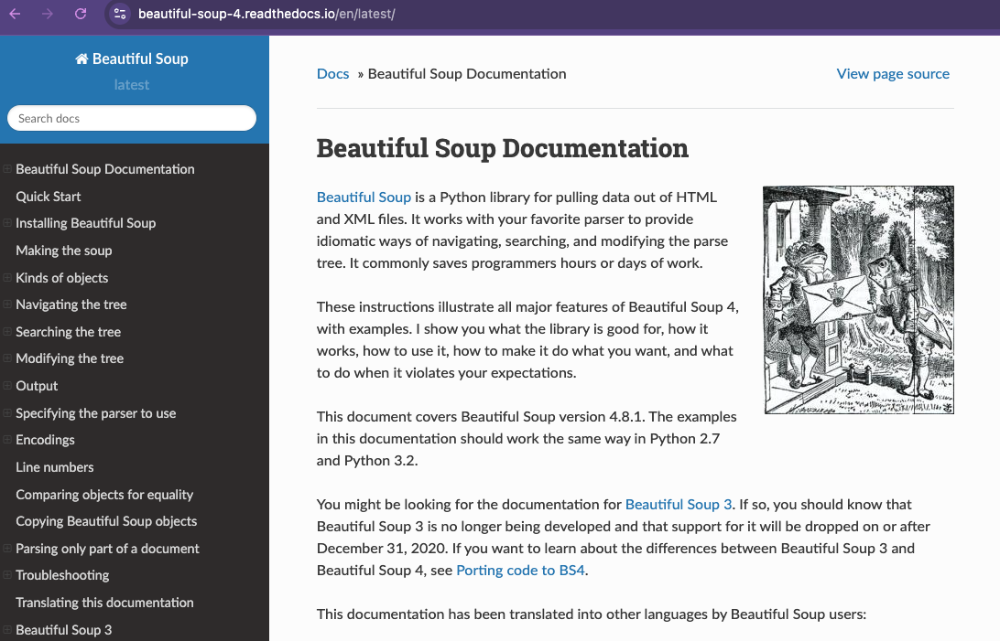
If we click on the Quick Start link, we can see that the documentation tells us to import the BeautifulSoup class from the bs4 package. So we can update our code to look like this:
from bs4 import BeautifulSoupRemember that the from keyword is used to import a specific module (aka Class or function in Python) from a package. Alternatively we could also import the entire package and then use the BeautifulSoup class like this:
import bs4
soup = bs4.BeautifulSoup(html_doc, 'html.parser')Finally we could technically use the asterisk symbol, which often means “all” or “any”, to import all the modules (aka Classes and functions) in the package:
from bs4 import *
soup = BeautifulSoup(html_doc, 'html.parser')
# imports * imports all modules in a packageHowever, this is generally not recommended because it can make it difficult to understand where a particular module is coming from.
You may also need to install a parser for BeautifulSoup. The html.parser parser is included with Python, but you can also use the lxml parser, which is faster and more lenient. You can install the lxml parser by running the following command:
pip install lxmlThere’s actually a number of possible parsers you can use with BeautifulSoup. Here’s a quick overview of the different parsers you can use with BeautifulSoup from the library’s documentation:
| Parser | Typical usage | Advantages | Disadvantages |
|---|---|---|---|
Python’s html.parser |
BeautifulSoup(markup, "html.parser") |
Batteries included Decent speed Lenient (As of Python 2.7.3 and 3.2) |
Not as fast as lxml Less lenient than html5lib |
| lxml’s HTML parser | BeautifulSoup(markup, "lxml") |
Very fast Lenient |
External C dependency |
| lxml’s XML parser | BeautifulSoup(markup, "lxml-xml")BeautifulSoup(markup, "xml") |
Very fast The only currently supported XML parser |
External C dependency |
| html5lib | BeautifulSoup(markup, "html5lib") |
Extremely lenient Parses pages the same way a web browser does Creates valid HTML5 |
Very slow External Python dependency |
I usually just use the built-in html.parser parser, but you can use the lxml parser if you want to. Next we’ll learn what these parsers are doing and how to use them!
BeautifulSoup Basics
In the Quick Start guide https://beautiful-soup-4.readthedocs.io/en/latest/#quick-start, we have an example of how to use the BeautifulSoup class to parse an HTML document. Let’s try this example in our first_web_scraping.py file.
html_doc = """
<html><head><title>The Dormouse's story</title></head>
<body>
<p class="title"><b>The Dormouse's story</b></p>
<p class="story">Once upon a time there were three little sisters; and their names were
<a href="http://example.com/elsie" class="sister" id="link1">Elsie</a>,
<a href="http://example.com/lacie" class="sister" id="link2">Lacie</a> and
<a href="http://example.com/tillie" class="sister" id="link3">Tillie</a>;
and they lived at the bottom of a well.</p>
<p class="story">...</p>
"""
soup = BeautifulSoup(html_doc, 'html.parser')
print(soup.prettify())We can see that html_doc is a variable that holds a multiline string that contains HTML. We are then using the BeautifulSoup class to parse the HTML document and the prettify() method to print the HTML document in a more readable format.
The power of BeautifulSoup is that it let’s us use the structure of the HTML document to extract the data we want. For example, we can use the built-in find_all() method to get all the links in the document and then use the get_text() method to get the text of each link.
links = soup.find_all('a')
for link in links:
print(link.get('href'))
print(link.get_text())From this we can see that we are getting all the links in the document and then printing the href attribute of each link and the text of each link. This is a very simple example, but it shows how we can use the structure of the HTML document to extract the data we want.
In BeautifulSoup, we have four kinds of objects that we can work with: Tag, NavigableString, BeautifulSoup, and Comment. The Tag object is the most important object and represents an HTML or XML tag. The NavigableString object represents the text within a tag. The BeautifulSoup object represents the whole of the document. The Comment object represents an HTML or XML comment. We’ll just focus on the Tag and BeautifulSoup objects for now.
BeautifulSoup Class
We’ve already started to use BeautifulSoup class, but let’s take a closer look at it. The BeautifulSoup class is the main class in the BeautifulSoup library and represents the whole of the document.
We usually define a BeautifulSoup object by passing in the HTML document and the parser we want to use. You’ll notice that the variable containing the BeautifulSoup object is often called soup, but you can call it whatever you want.
The core power of BeautifulSoup is that it let’s you navigate the HTML Document like a tree, which you can read more about here https://beautiful-soup-4.readthedocs.io/en/latest/index.html#navigating-the-tree.
Remember in HTML we can have nested HTML elements, and so BeautifulSoup let’s us use that structure to find elements. Otherwise, this would just be unstructured text which is difficult to work with.
So far to navigate the tree we’ve been using the find_all method, which has the following documentation https://beautiful-soup-4.readthedocs.io/en/latest/index.html#find-all.
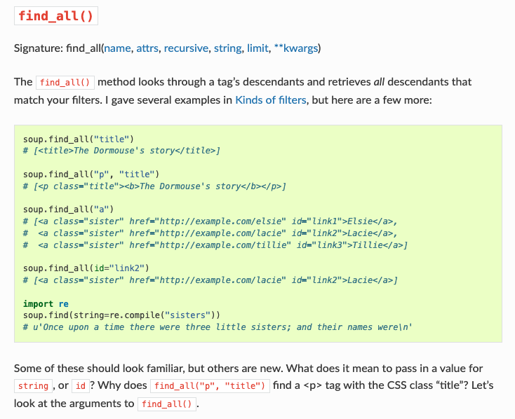
In the documentation, it talks about how this method “looks through a tag’s descendants and retrieves all descendants that match your filters.” This is a bit confusing, but what it means is that the find_all method searches through the HTML document and retrieves all the elements that match the filter you give it.
So to go back to our previous example:
links = soup.find_all('a')
for link in links:
print(link.get('href'))
print(link.get_text())Here we are passing in the a tag name to the find_all method. We could also pass in other filters like a class name:
links = soup.find_all('a', class_='sister')Now this code should pretty identically because we only have links with the class name sister. However, you can imagine how this could be useful if you only wanted to get links with a specific class name.
You can also pass in other filters like id, href, etc. For example, if you wanted to get the link with the id attribute link1, you could do this:
link = soup.find_all('a', id='link1')The filter can be a tag name, a tag attribute, a tag attribute value, a tag class, a tag id, etc. The find_all method returns a list of tags that match the filter.
Tag Class
So far we have been just searching the HTML tree to find elements, but it is helpful to understand that in BeautifulSoup each element is represented by a Tag object. The Tag object is the most important object in BeautifulSoup and represents an HTML or XML tag.
For example, in our existing code we could use the find_all() method to get all the p tags in the document and then use the get_text() method to get the text of each p tag.
paragraphs = soup.find_all('p')
for paragraph in paragraphs:
print(paragraph.get_text())Tags are equivalent to the elements in HTML, so any time you want to see if tag exists in the HTML document, you can use either the find_all() method to search for it or simply soup.p to get the first p tag in the document.
We can also use the .name attribute to get the name of the tag and the .attrs attribute to get the attributes of the tag.
paragraphs = soup.find_all('p')
for paragraph in paragraphs:
print(paragraph.name)
print(paragraph.attrs)Now we should see the name of the tag and the attributes of the tag printed for each p tag in the document.
Attributes are equivalent to the attributes in HTML, so any time you want to see if an attribute exists in the HTML document, you can use either the .get() method to get the value of the attribute or simply square brackets to get the value of the attribute.
paragraphs = soup.find_all('p')
for paragraph in paragraphs:
print(paragraph.get('class'))
print(paragraph['class'])Now that we are understanding how BeautifulSoup represents HTML, we can start to further navigate the HTML tree. In addition to searching for elements, we can also navigate the tree by moving up, down, and sideways. We can use the parent, children, descendants, next_sibling, and previous_sibling attributes to navigate the tree. So for example in our basic HTML doc variable we have paragraphs that are siblings, so we can use the next_sibling attribute to get the next sibling of a tag.
paragraphs = soup.find_all('p')
for paragraph in paragraphs:
print(paragraph.next_sibling)We could also use the parent attribute to get the parent of a tag.
paragraphs = soup.find_all('p')
for paragraph in paragraphs:
print(paragraph.parent)You don’t need to memorize every functionality in BeautifulSoup, but it’s good to know that it’s there and to know how to look up the documentation. The documentation has lots of examples, so it’s a great resource to use when you’re working with BeautifulSoup.
Scraping Project Gutenberg
So far we’ve been using some fairly basic HTML but we can start working with an actual HTML document. Today we’ll be using Project Gutenberg’s Top 100 eBooks page https://www.gutenberg.org/browse/scores/top. This page lists the top 100 eBooks on Project Gutenberg and we can use BeautifulSoup to scrape the titles.
First, we’re going to save the page as an HTML file. You can do this by right clicking on the page and selecting “Save As” and then saving it as top_100_ebooks.html in the same directory as your first_web_scraping.py file.
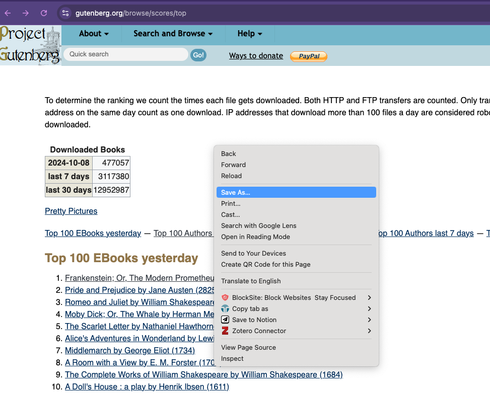
Now we can try scraping the page!
from bs4 import BeautifulSoup
soup = BeautifulSoup(open("top_100_ebooks.html"), features="html.parser")
print(soup.prettify())You can see we now have the full html page in all it’s weirdly organized HTML glory!
While it’s great to be able to just see the HTML, usually we are scraping to structured HTML data and turn it into a structured data format like a CSV or JSON file. So let’s try and get the titles of the top 100 eBooks.
First, let’s take a look at the structure of the HTML document. We can use the inspect feature in your browser to do this.
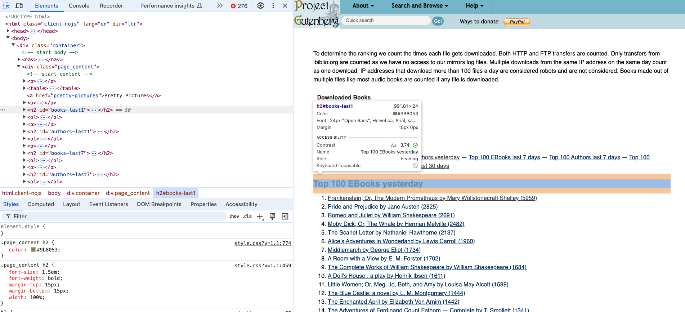
If we click the small arrow icon in our inspector, we can start to select relevant HTML elements. We can see that the Top 100 EBooks yesterday is an h2 tag. After our readings about bestsellers and top of TikTok, we can imagine that scraping this list of books might be useful to researchers interested in what people are reading on Project Gutenberg.
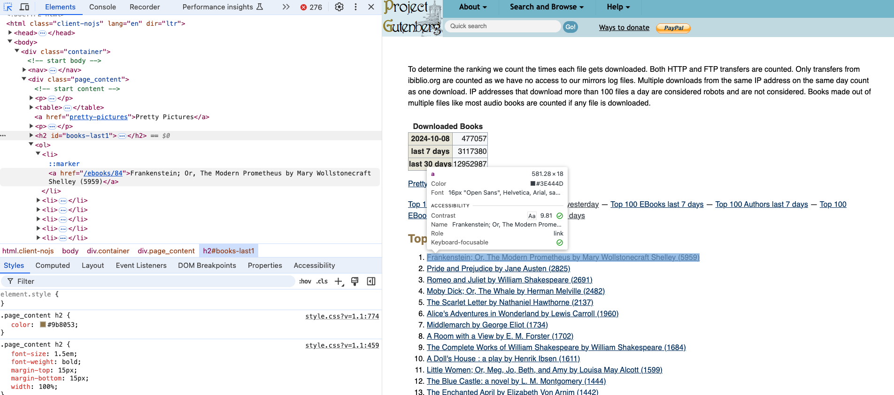
If we select the titles, we can see that they are nested in an ol tag and then each title is in a li tag. So we can use the find_all() method to get all the li tags in the document and then use the get_text() method to get the text of each li tag.
titles = soup.find_all('li')
for title in titles:
print(title.get_text())However, you’ll notice if we are running this code that we will get all the links on the page, not just the titles. This is because the find_all() method is searching the whole document and not just the ol tag. So we need to be more specific in our search.
Quick In-Class Exercise
In your first_web_scraping.py file, try to modify the code so that it only prints the titles of the Top 100 EBooks yesterday section. To do this, you’ll need to access the correct tag for Top 100 EBooks yesterday and then use BeautifulSoup to navigate to the correct ol tag. Finally, we want to print just the title of each book. To help you I would recommend taking a look at the following functions in the BeautifulSoup documentation:
find_next()https://beautiful-soup-4.readthedocs.io/en/latest/index.html#find-all-next-and-find-nextget_text()https://beautiful-soup-4.readthedocs.io/en/latest/index.html#get-text
However, you are welcome to solve this problem in any way you want!
Requesting and Scraping Web Pages
We are now officially scraping a web page 🥳!! But what if we wanted to scrape more than one? Saving each manually would get tiring really quickly!
Let’s try taking our updated code but rather than working with the saved version of the web page, let’s try to get the web page programmatically. To do this, we need to use the requests library to get the web page. We already installed requests initially so now we need to import it into our first_web_scraping.py file.
from bs4 import BeautifulSoup
import requestsLet’s also take a look at the documentation for the requests library https://requests.readthedocs.io/en/latest/.
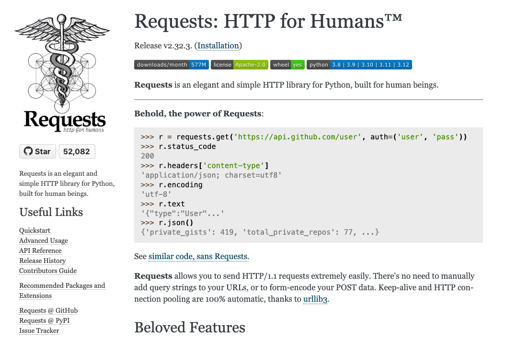
You’ll notice the tag line for the library is “HTTP for Humans” which is a great way to think about it. The requests library is a library that allows us to send HTTP requests to web pages as if we were a web browser. As you remember from our lesson on the web, when you go to a URL in your browser, your browser sends an HTTP request to the server and the server sends back an HTTP response. The requests library allows us to do the same thing in Python.
If we go to the Quickstart page https://requests.readthedocs.io/en/stable/user/quickstart/, we can see how we not only import the library but also how we can use it.
For example, the core method in the requests library is the get() method, which is used to get a web page. The get() method returns a Response object, which has a status_code attribute that contains the status code of the request and a headers attribute that contains the headers of the request. Let’s try it with our Project Gutenberg page.
response = requests.get("https://www.gutenberg.org/browse/scores/top")
print("Status code:", response.status_code)
print("Headers:",response.headers)We should see the following output:
Status code: 200
Header: {'date': 'Wed, 06 Oct 2021 17:00:01 GMT', 'server': 'Apache', 'content-location': 'top.php', 'vary': 'negotiate,Accept-Encoding', 'tcn': 'choice', 'content-encoding': 'gzip', 'content-length': '11521', 'x-backend': 'gutenweb5', 'content-type': 'text/html; charset=UTF-8'}The status_code attribute contains the status code of the request and the headers attribute contains the headers of the request. The status code 200 means that the request was successful and the headers contain information about the request. If you don’t get a 200 you can refresh your knowledge of the other status codes in our lesson on the web but it usually means that either:
- you don’t have access to the web page (so a status code of
403or404) - that there’s an error on the server (so a status code of
500) - that the page doesn’t exist (so a status code of
404) - Or there’s an error with your internet connection.
Now that we have the Response object, we can use the text attribute to get the HTML of the page. Let’s try it out.
soup = BeautifulSoup(response.text, "html.parser")
print(soup.prettify())We should see the HTML of the same page we downloaded printed out. This is great because it means we can now scrape any web page we want, not just the ones we have saved locally.
So returning to our previous our code, we can now use the requests library to get the web page and the text attribute of the Response object to get the HTML of the page.
from bs4 import BeautifulSoup
import requests
response = requests.get("https://www.gutenberg.org/browse/scores/top")
soup = BeautifulSoup(response.text, "html.parser")
top_100_ebooks = soup.find(id="books-last1")
list_of_books = top_100_ebooks.find_next('ol').find_all('li')
for book in list_of_books:
print(book.get_text())Now that our code is working, we can start to consider what data we would actually want and how to structure it.
So far, we are only getting the Top 100 EBooks Yesterday but there’s a number of top lists that we could scrape, including authors. So we could expand our code to get all top lists from this page and then store it in some sort of data structure, like a list of dictionaries.
from bs4 import BeautifulSoup
import requests
response = requests.get("https://www.gutenberg.org/browse/scores/top")
soup = BeautifulSoup(response.text, "html.parser")
top_lists = soup.find_all("h2")
data = []
for top_list in top_lists:
top_list_name = top_list.get_text()
top_list_items = top_list.find_next('ol').find_all('li')
for item in top_list_items:
data.append({"list": top_list_name, "title": item.get_text()})Now since we are getting both books and authors, let’s create two separate lists of dictionaries, one for books and one for authors.
from bs4 import BeautifulSoup
import requests
response = requests.get("https://www.gutenberg.org/browse/scores/top")
soup = BeautifulSoup(response.text, "html.parser")
top_lists = soup.find_all("h2")
books = []
authors = []
for top_list in top_lists:
top_list_name = top_list.get_text()
top_list_items = top_list.find_next('ol').find_all('li')
for item in top_list_items:
if "EBooks" in top_list_name:
books.append({"list": top_list_name, "title": item.get_text()})
else:
authors.append({"list": top_list_name, "author": item.get_text()})Finally, so far we are just saving the names of items but we could also save the links to the items. We could do this by getting the href attribute of the a tag.
from bs4 import BeautifulSoup
import requests
response = requests.get("https://www.gutenberg.org/browse/scores/top")
soup = BeautifulSoup(response.text, "html.parser")
top_lists = soup.find_all("h2")
books = []
authors = []
for top_list in top_lists:
top_list_name = top_list.get_text()
top_list_items = top_list.find_next('ol').find_all('li')
for item in top_list_items:
if "EBooks" in top_list_name:
books.append({"top_list": top_list_name, "book_title": item.get_text(), "book_link": item.find('a').get('href')})
else:
authors.append({"top_list": top_list_name, "author_name": item.get_text(), "author_link": item.find('a').get('href')})Now we just need to save the data to a file. We could either create text files, but in this case it might be easier to create a csv file. To do that we would need to use the csv library, which is part of the Python Standard Library. We would also need to use the open() method to open a file and the write() method to write to the file. We would also need to use the writerow() method to write a row to the file.
import csv
with open('top_100_ebooks.csv', 'w') as file:
writer = csv.writer(file)
# Write the headers
writer.writerow(['top_list', 'book_title', 'book_link'])
for book in books:
writer.writerow([book['top_list'], book['book_title'], book['book_link']])
with open('top_100_authors.csv', 'w') as file:
writer = csv.writer(file)
# Write the headers
writer.writerow(['top_list', 'author_name', 'author_link'])
for author in authors:
writer.writerow([author['top_list'], author['author_name'], author['author_link']])You’ll notice that I am using the with statement to open the file. This is a context manager that automatically closes the file when the block of code is done. This is a good practice because it ensures that the file is closed properly and that there are no issues with the file. Furthermore, I’m making the column headers the first row of the csv file and using lowercase and underscores in the names. This is a good practice because it makes it easier to read the file later on and to work with the data.
Now that we have links to other pages, we could also start using requests to get those pages and scrape them. Let’s create a function to check if the web page exists and if we would be able to scrape it based on the status code.
def check_page_exists(url):
response = requests.get(url)
if response.status_code == 200:
return True
else:
return FalseNow we can use this function to check if we can scrape the links to the books and authors.
for book in books:
book['webpage_exists'] = check_page_exists(book['book_link'])
for author in authors:
author['webpage_exists'] = check_page_exists(author['author_link'])You’ll likely notice that we get a lot of errors when we run this code. Why is that?
Take a look at our links. You’ll notice that the top book, Frankenstein; Or, The Modern Prometheus has a link of /ebooks/84. This is a relative link, which means that it’s a link that is relative to the current page. This is different from an absolute link, which is a link that is absolute to the root of the website. So we need to convert the relative links to absolute links.
We can simply click on the link in the web page to see what the full URL is. In this case, the full URL is https://www.gutenberg.org/ebooks/84. So we can use this information to convert the relative links to absolute links.
def check_gutenberg_page_exists(url):
gutenberg_url = "https://www.gutenberg.org" + url
response = requests.get(gutenberg_url)
if response.status_code == 200:
return True
else:
return FalseNow when we rerun our code, we should see that we are able to get the status code for each of the links!
Many web pages use relative links, so this is a common issue when scraping web pages and it’s why it’s important to always inspect and explore the HTML of the web page you are scraping.
Advanced Web Scraping
So far we have been scraping web pages that are relatively simple, but what if we wanted to scrape a more complex web page? For example, what if we wanted to scrape a fandom wiki page? These pages are often more complex because they have more complex HTML and CSS. Let’s try scraping the Lord of the Rings wiki page https://lotr.fandom.com/wiki/Main_Page.
For those unfamiliar, fandom wikis are fan-created wikis that are often used to document popular culture. I haven’t been able to find a list of all of these wikis, but there is a wikipedia page listing some of the most prominent ones https://en.wikipedia.org/wiki/List_of_fan_wikis. You’ll notice that many of these wikis started in the mid-2000s and have grown in popularity since then. For example, there’s actually a wikipedia page for the Star Wars wiki https://en.wikipedia.org/wiki/Wookieepedia, which is called Wookieepedia.
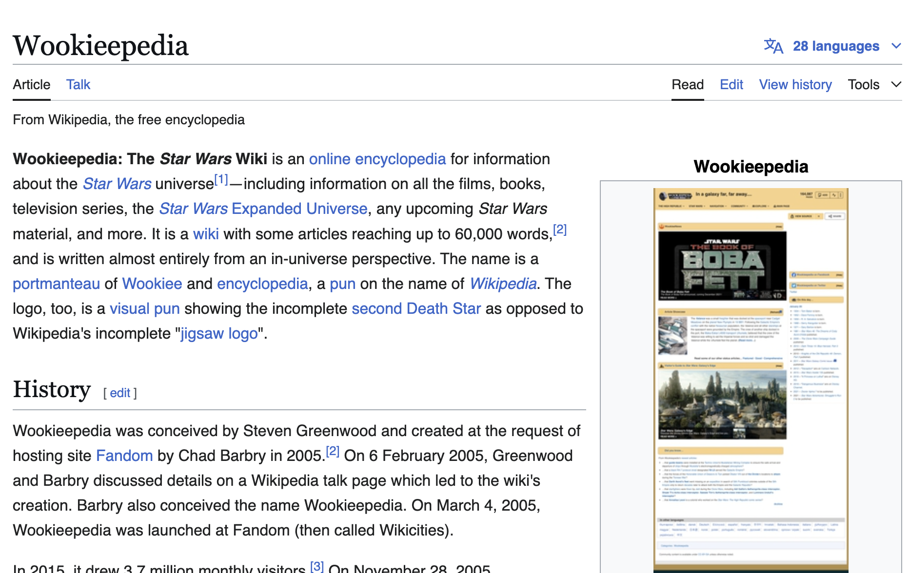
This page details some of the history and statistics of Wookieepedia, which started in 2005. You’ll notice that it has over 150,000 articles and over 1,000,000 pages. This is a huge amount of information and this wiki is far larger than the Lord of the Rings wiki.
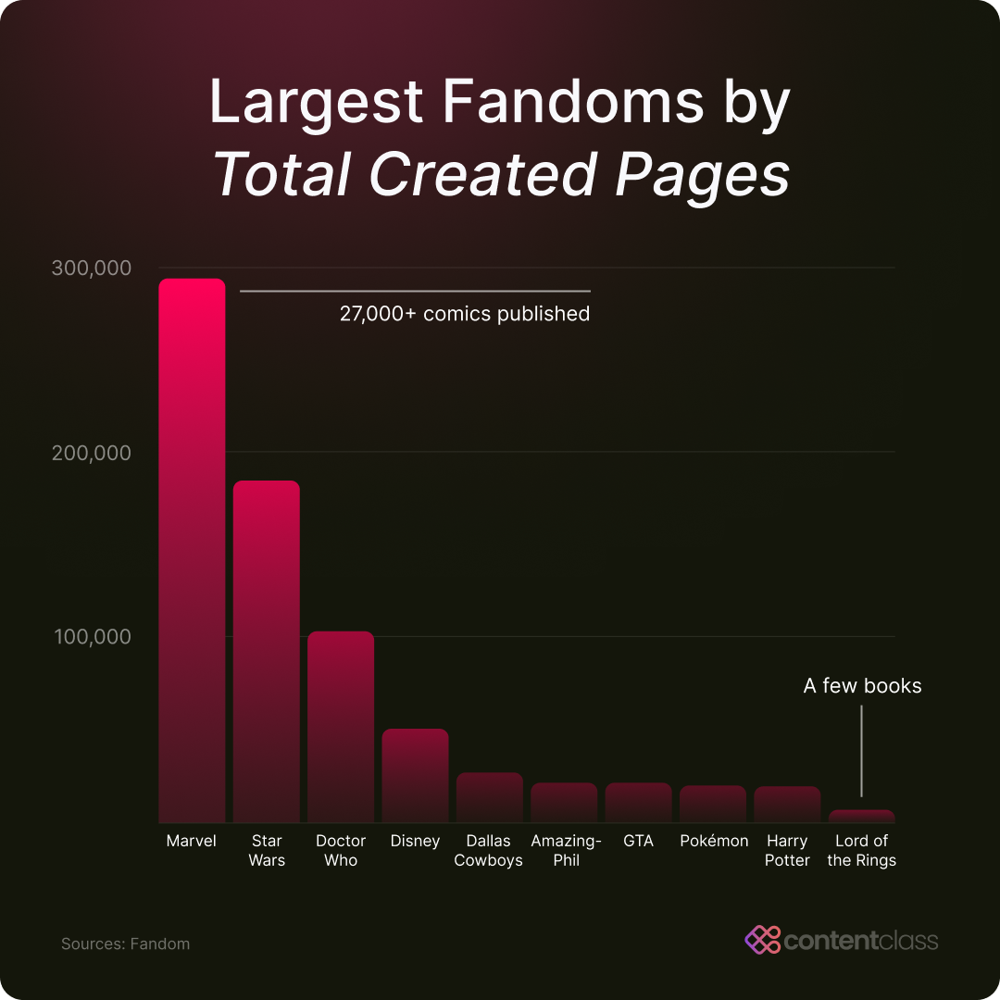
Before we start scraping this fandom wiki though, we need to check for the terms of service or user policies of the website. So far I’ve only been able to find the following page on the wiki https://lotr.fandom.com/wiki/LOTR:Current_policies which details the current policies of the wiki and that most of the content is under a CC-BY-SA license. There is a terms of service for Fandom wikis https://www.fandom.com/terms-of-use but that also doesn’t have clear information about scraping. So the final place we can check is the robots.txt file.
We can access this by going to the root of the website and adding /robots.txt to the end of the URL. For example, the robots.txt file for the Lord of the Rings wiki is https://lotr.fandom.com/robots.txt. This file contains the rules for web crawlers and scrapers and tells them what they can and can’t scrape.
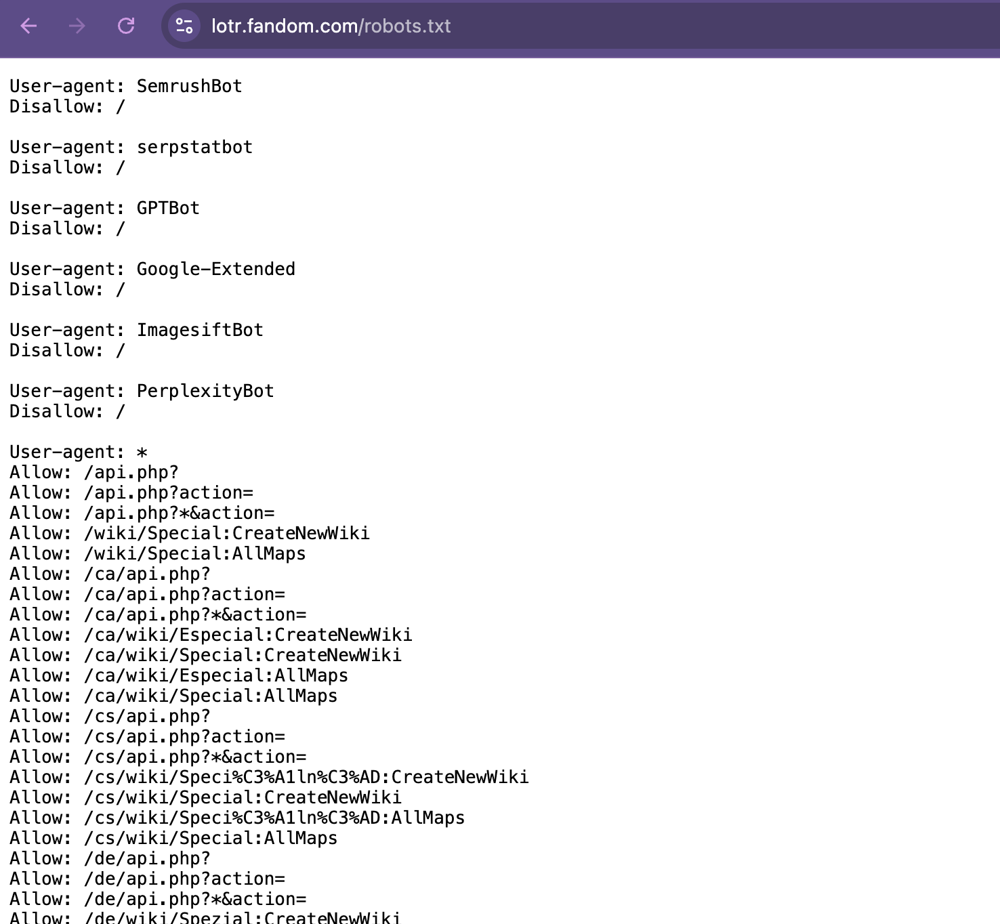
I won’t post the full file here since it’s quite long, but we can work through the main relevant sections:
- The
User-agentsection tells us what web crawlers and scrapers are allowed to scrape the website. For example, theUser-agent: *section tells us that all web crawlers and scrapers are allowed to scrape the website. This is the most common section and means that the website is open to scraping. - Within the
User-agentsection, we can see there is aDisallowsection tells us what web crawlers and scrapers are not allowed to scrape the website. For example, theDisallow: /wiki/Special:section tells us that web crawlers and scrapers are not allowed to scrape theSpecial:pages on the website. You’ll also notice that some bots are explicitly disallowed from scraping the website, like SemrushBot or GPTBot. - Similarly, the
Allowsection tells us what web crawlers and scrapers are allowed to scrape the website. For example, theAllow: /wiki/*section tells us that web crawlers and scrapers are allowed to scrape thewikipages on the website. We can also see theAllow: /api.php?, which allows crawlers to access certain API endpoints, which are often set up for structured data access, making them a good option for ethical scraping. This section is less common than theDisallowsection but is used to allow web crawlers and scrapers to scrape certain pages on the website. - The
Noindexsection tells us what web crawlers and scrapers are not allowed to index. For example, theNoindex: /wiki/Special:section tells us that web crawlers and scrapers are not allowed to index theSpecial:pages on the website. Although this doesn’t restrict access, it signals pages that the site prefers to keep less visible. Scraping these pages could go against the site’s intentions for privacy or low visibility. - Finally, the
Sitemapsection tells us where the sitemap for the website is. For example, theSitemap: https://lotr.fandom.com/sitemap-newsitemapxml-index.xmlsection tells us that the sitemap for the website is athttps://lotr.fandom.com/sitemap-newsitemapxml-index.xml. This is less common than the other sections but is used to help web crawlers and scrapers find the sitemap for the website.
One additional item you might see is a Crawl-delay section tells us how long web crawlers and scrapers should wait between requests. For example, if a robots.txt says Crawl-delay: 5 that tells us that web crawlers and scrapers should wait 5 seconds between requests. However, in our case the robots.txt file for the Lord of the Rings wiki doesn’t have this section.
Looking through this robots.txt tells us that we can scrape many of the pages on the Lord of the Rings wiki, but we should be careful to avoid the Special: pages and to respect the Noindex sections. This is a good practice to follow when scraping websites and it’s always a good idea to check the robots.txt file before scraping a website.
So let’s try scraping the Lord of the Rings wiki page. We can start by getting the web page using the requests library and then using the BeautifulSoup library to parse the HTML.
response = requests.get("https://lotr.fandom.com/wiki/Main_Page")
print(response.status_code)
soup = BeautifulSoup(response.text, "html.parser")Bot Protection and Cloudflare
However, you might run into a problem. If you try to run the above code, you may get a 403 Forbidden error instead of a 200 status code. Why would that be?
The answer: Bot Protection!
Many modern websites use automated bot detection services like Cloudflare to protect against unwanted scraping, DDoS attacks, and other malicious activity. Cloudflare detects requests that look like bots (like Python’s requests library) and blocks them with a 403 error. When you visit the website in your browser, your browser identifies itself with a proper User-Agent header that makes Cloudflare think you’re a real person. But when you use requests.get(), it sends a User-Agent like python-requests/2.x.x, which Cloudflare recognizes as a bot.
This is an important lesson about web ethics and bot detection:
- Websites have the right to protect themselves from unwanted scrapers and attacks
- Bot detection is a cat-and-mouse game where websites implement protections and scrapers develop workarounds
- We should respect
robots.txtand the website’s wishes, but also find ethical ways to access data we need for legitimate research
To handle Cloudflare’s bot protection ethically, we can use the cloudscraper library. You can read the documentation here, but generally the benefit of cloudscraper is that this library mimics a real browser more effectively, allowing us to scrape websites that have Cloudflare protection while still respecting their robots.txt file and terms of service.
First, install cloudscraper:
pip install cloudscraperThen, instead of using requests.get(), use cloudscraper:
import cloudscraper
# Create a scraper that handles Cloudflare bot protection
scraper = cloudscraper.create_scraper()
response = scraper.get("https://lotr.fandom.com/wiki/Main_Page")
print(response.status_code)
soup = BeautifulSoup(response.text, "html.parser")The cloudscraper library automatically handles Cloudflare’s JavaScript challenge, making requests that look like they’re coming from a real browser. This is a much more reliable approach than trying to add headers manually to the requests library.
If you are getting an error, you might need to add the timeout parameter to the get() method. This parameter tells the cloudscraper library how long to wait for a response before timing out. For example, if you wanted to wait 5 seconds for a response, you would add timeout=5 to the get() method.
response = scraper.get("https://lotr.fandom.com/wiki/Main_Page", timeout=5)You can also do a speed test like we read about in “The Website Obesity Crisis” article to see how long it takes to get a response from the website.
import time
start = time.time()
response = scraper.get("https://lotr.fandom.com/wiki/Main_Page")
end = time.time()
print(end - start)Now since this wiki is huge, we need to narrow our focus to a particular goal or question. While there are literally thousands of pages on this wiki, we could start by scraping the character pages. In particular, there’s been a new adaption of The Lord of the Rings by Amazon called Rings of Power, so we could start by scraping the character pages for the characters in the new adaption.
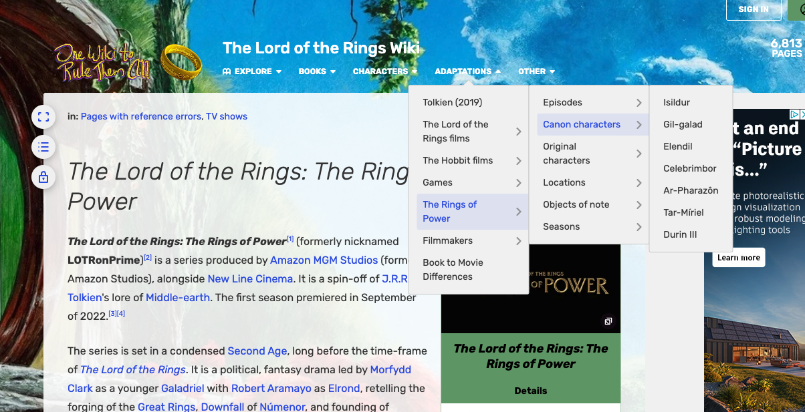
We can see there are two pages for characters: one for canon (that is existing) characters in the show and one for new characters. We could start by scraping the canon characters page https://lotr.fandom.com/wiki/Category:Canon_characters_in_The_Rings_of_Power.
First, we need to inspect the HTML of the page to see how the characters are structured.
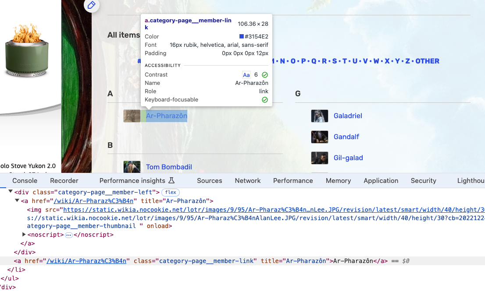
We can see that while each character is listed in a larger div with the class category-page__member, the character name is in a a tag with the class category-page__member-link. So we can use the find_all() method to get all the a tags with the class category-page__member-link and then use the get_text() method to get the text of each a tag.
import cloudscraper
scraper = cloudscraper.create_scraper()
response = scraper.get("https://lotr.fandom.com/wiki/Category:Canon_characters_in_The_Rings_of_Power")
soup = BeautifulSoup(response.text, "html.parser")
characters = soup.find_all('a', class_='category-page__member-link')
for character in characters:
print(character.get_text())Now if we click on one of these character pages like https://lotr.fandom.com/wiki/Galadriel, we can see that there’s a lot of information about the character. We could try scraping this page as well. For now, let’s focus on seeing how many languages each character page has been translated into. We can see this at the top of the character page.
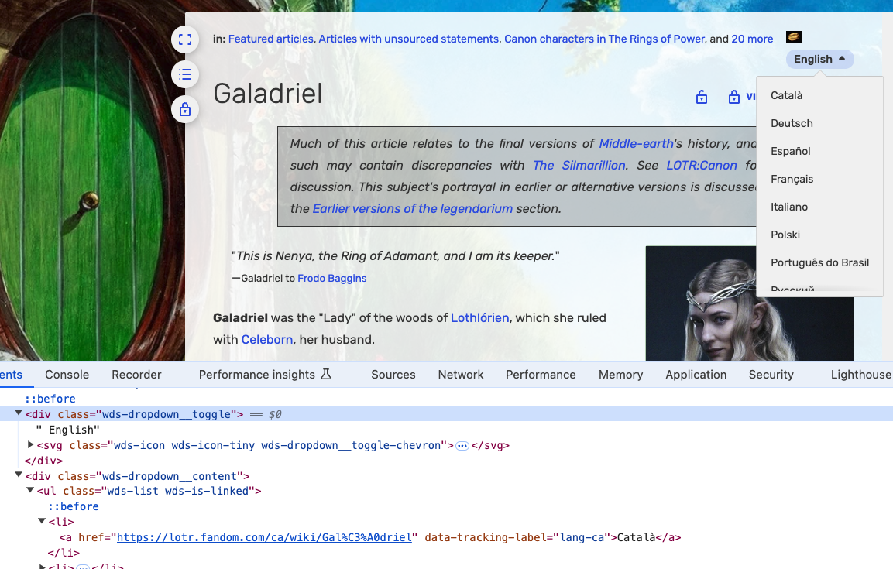
We can see that the first translation is into Catallà, which is Catalan, which has a link with the attribute data-tracking-label="lang-ca". We can use this structure to get the number of languages each character page has been translated into. To do this, we need to use something called regex or regular expressions. regex is a way to search for patterns in text and is a powerful tool for text processing. We can use the re library, which is part of the Python Standard Library, to use regex.
import re
import cloudscraper
scraper = cloudscraper.create_scraper()
response = scraper.get("https://lotr.fandom.com/wiki/Galadriel")
soup = BeautifulSoup(response.text, "html.parser")
languages = soup.find_all('a', attrs={'data-tracking-label': re.compile(r'lang-')})
for language in languages:
print(language.get('data-tracking-label'))
print(language.get_text())Now that we have the number of languages each character page has been translated into, we can start to think about how to structure this data and how to turn some of our logic into a function. We could create a list of dictionaries with the character name and the number of languages the character page has been translated into.
import cloudscraper
import csv
import re
scraper = cloudscraper.create_scraper()
def get_character_languages(url):
try:
response = scraper.get(url, timeout=10)
if response.status_code != 200:
return []
soup = BeautifulSoup(response.text, "html.parser")
languages = soup.find_all('a', attrs={'data-tracking-label': re.compile(r'lang-')})
return [{"language": language.get('data-tracking-label'), "language_name": language.get_text()} for language in languages]
except Exception as e:
print(f"Error getting languages from {url}: {e}")
return []
response = scraper.get("https://lotr.fandom.com/wiki/Category:Canon_characters_in_The_Rings_of_Power", timeout=10)
soup = BeautifulSoup(response.text, "html.parser")
canon_characters = soup.find_all('a', class_='category-page__member-link')
canon_characters_data = []
for character in canon_characters:
character_data = {"character": character.get_text(), "character_link": character.get('href')}
character_data['languages'] = get_character_languages("https://lotr.fandom.com" + character_data['character_link'])
character_data['langauges_count'] = len(character_data['languages'])
canon_characters_data.append(character_data)
with open('lotr_canon_characters.csv', 'w') as file:
writer = csv.writer(file)
writer.writerow(['character', 'character_link', 'languages', 'languages_count'])
for character in canon_characters_data:
writer.writerow([character['character'], character['character_link'], character['languages'], character['langauges_count']])Now we could do the same for the new characters page https://lotr.fandom.com/wiki/Category:New_characters_in_The_Rings_of_Power and then compare the number of languages the canon characters have been translated into with the number of languages the new characters have been translated into. We could also use the Rich library from the last assignment to print out the data in a more readable format.
response = scraper.get("https://lotr.fandom.com/wiki/Category:Characters_created_for_The_Rings_of_Power", timeout=10)
soup = BeautifulSoup(response.text, "html.parser")
new_characters = soup.find_all('a', class_='category-page__member-link')
new_characters_data = []
for character in new_characters:
character_data = {"character": character.get_text(), "character_link": character.get('href')}
character_data['languages'] = get_character_languages("https://lotr.fandom.com" + character_data['character_link'])
character_data['langauges_count'] = len(character_data['languages'])
new_characters_data.append(character_data)
with open('lotr_new_characters.csv', 'w') as file:
writer = csv.writer(file)
writer.writerow(['character', 'character_link', 'languages', 'languages_count'])
for character in new_characters_data:
writer.writerow([character['character'], character['character_link'], character['languages'], character['langauges_count'])
from rich.console import Console
from rich.table import Table
console = Console()
table = Table(title="Translations of LOTR Canon Characters VS New Characters")
table.add_column("Character", style="cyan")
table.add_column("Language Count", style="magenta")
for character in canon_characters_data:
table.add_row(character['character'], str(character['langauges_count']))
for character in new_characters_data:
table.add_row(character['character'], str(character['langauges_count']))
console.print(table)We could even rewrite this code to be more DRY (that is the principle of Don’t Repeat Yourself) by creating a function to get the character data and then using that function to get the canon and new character data.
import re
import cloudscraper
from bs4 import BeautifulSoup
from rich.console import Console
from rich.table import Table
console = Console()
# Create a cloudscraper instance to handle Cloudflare bot protection
scraper = cloudscraper.create_scraper()
def get_character_languages(url):
try:
response = scraper.get(url, timeout=10)
if response.status_code != 200:
return []
soup = BeautifulSoup(response.text, "html.parser")
languages = soup.find_all('a', attrs={'data-tracking-label': re.compile(r'lang-')})
return [{"language": language.get('data-tracking-label'), "language_name": language.get_text()} for language in languages]
except Exception as e:
console.print(f"[red]✗ Error getting languages from {url}: {e}[/red]")
return []
def fetch_characters(url, category):
try:
response = scraper.get(url, timeout=10)
soup = BeautifulSoup(response.text, "html.parser")
characters = soup.find_all('a', class_='category-page__member-link')
characters_data = []
for character in characters:
console.print(f"Processing {character.get_text()}...")
character_data = {
"character": character.get_text(),
"character_link": character.get('href'),
"category": category
}
character_data['languages'] = get_character_languages("https://lotr.fandom.com" + character_data['character_link'])
character_data['languages_count'] = len(character_data['languages'])
characters_data.append(character_data)
return characters_data
except Exception as e:
console.print(f"[red]✗ Error in fetch_characters: {e}[/red]")
return []
# Fetch characters from the given URLs
canon_characters_data = fetch_characters("https://lotr.fandom.com/wiki/Category:Canon_characters_in_The_Rings_of_Power", "Canon")
new_characters_data = fetch_characters("https://lotr.fandom.com/wiki/Category:Characters_created_for_The_Rings_of_Power", "New")
# Combine and sort characters by language count
all_characters_data = canon_characters_data + new_characters_data
sorted_characters = sorted(all_characters_data, key=lambda x: x['languages_count'], reverse=True)
# Display the sorted characters in a table
table = Table(title="Translations of LOTR Canon Characters VS New Characters")
table.add_column("Character", style="cyan")
table.add_column("Language Count", style="magenta")
table.add_column("Category", style="green")
for character in sorted_characters:
table.add_row(character['character'], str(character['languages_count']), character['category'])
console.print(table)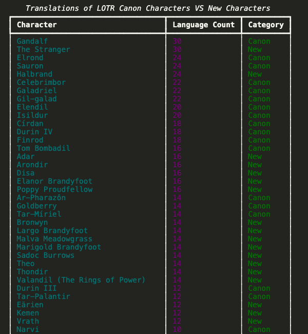
Now in our full script we import all the libraries at the top, have two functions that get the character data and then fetch the characters, and then we combine and sort the characters by language count. We then display the sorted characters in a table using the Rich library. This is a much cleaner and more readable script that is easier to understand and work with.
Beyond BeautifulSoup and Requests
While BeautifulSoup, requests, and cloudscraper work well for most web scraping tasks, you may encounter websites that require more sophisticated tools. Two important libraries to be aware of are:
Selenium (https://selenium-python.readthedocs.io/) is a browser automation tool that controls a real web browser programmatically. Use Selenium when you need to scrape websites that render content dynamically with JavaScript, since BeautifulSoup only parses static HTML.
Scrapy (https://scrapy.org/) is a full-featured web scraping framework designed for large-scale, production-grade projects. It includes built-in support for managing requests, handling bot protection, following links, storing data, and more. Use Scrapy when you’re building a sophisticated scraping pipeline that needs to handle many pages efficiently.
When to use each: - BeautifulSoup + requests/cloudscraper: Static websites, quick scripts, learning web scraping (what we’ve done here) - Selenium: Websites requiring JavaScript execution or complex user interactions - Scrapy: Large-scale scraping projects with complex requirements
Each approach has tradeoffs in complexity, speed, and resource use. For the tasks you’ll encounter in this course, BeautifulSoup with error handling is typically the right choice.
Fandom Wikis and Web Scraping Homework
Now that you have learned the basics of web scraping, it’s time to try it out for your next homework assignment. In your is310-coding-assignments, you should have already create a new directory called web-scraping and a new file called first_web_scraping.py. You should now create a new file called fandom_wiki_scraping.py in the web-scraping directory.
In this assignment, you are welcome to select any fandom wiki you are interested in and the goal is try scraping the wiki. You should complete the following tasks:
Once you have completed the assignment, you should post a link to your folder in our GitHub discussion https://github.com/CultureAsData-UIUC/is310-spring-2026/discussions/7.
Footnotes
Crocker, Camille Fischer and Andrew. “Victory! Ruling in hiQ v. Linkedin Protects Scraping of Public Data.” Electronic Frontier Foundation, September 10, 2019. https://www.eff.org/deeplinks/2019/09/victory-ruling-hiq-v-linkedin-protects-scraping-public-data.↩︎
Lomas, Natasha. “Social Media Giants Urged to Tackle Data-Scraping Privacy Risks.” TechCrunch (blog), August 24, 2023. https://techcrunch.com/2023/08/24/data-scraping-privacy-risks-joint-statement/.↩︎